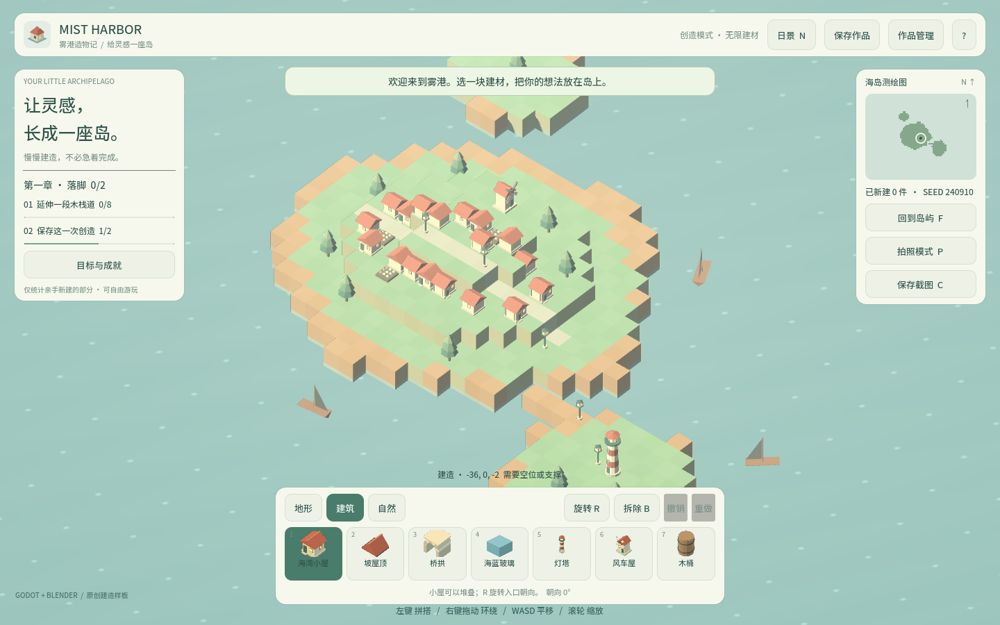

卷 5 · 第 26 章 Windows 单文件：embed_pck 与"一个 exe 就是全部"
本章目标：读懂 Windows 预设里那个关键开关，理解
单文件发布为什么对教学/分发场景特别友好，以及它还缺什么才够"商业级"。
对应任务：T26 / T27 | 对应文件：export_presets.cfg的[preset.1]、tools/dev.py
26.1 一条命令，一个文件
python tools/dev.py export-windows # → build-win/mist-harbor.exe导出后目录里只有 mist-harbor.exe——没有 pck、没有 DLL、没有附属文件夹。
原因就在这一行：
[preset.1.options]
binary_format/embed_pck=true # ← 把资源包嵌进 exe| 开关 | 含义 |
|---|---|
| --- | --- |
embed_pck=true | pck 嵌入 exe → 单文件，拷给别人就能跑 |
embed_pck=false | exe + 独立 pck → 两文件，更新资源方便但容易丢文件 |
为什么选单文件？
本实训的分发场景是"发给学员/朋友/展会演示"——少一个文件就少一类"我打不开"的问题。
26.2 预设里其它值得注意的项
binary_format/architecture="x86_64"
texture_format/s3tc_bptc=true # 桌面显卡通用压缩
texture_format/etc2_astc=false # 移动端格式，桌面不需要
debug/export_console_wrapper=1 # 带一个控制台窗口（便于看日志）
codesign/enable=false # 未签名
application/modify_resources=true
application/icon="" # 未设图标
application/export_angle=0
application/export_d3d12=0| 项 | 当前 | 商业级还差什么 |
|---|---|---|
| --- | --- | --- |
application/icon | 空 | 换成自己的图标（工程里已有 assets/icon.svg，可导出 ico） |
codesign/enable | false | 加代码签名证书，否则 Windows SmartScreen 会警告 |
| 版本号/产品名 | 未设 | 在 application/* 里填（便于安装程序与升级） |
export_console_wrapper | 1（有控制台） | 正式发布应改为 0，避免黑窗口 |
| 架构 | 仅 x86_64 | 若要支持 ARM Windows 需额外架构 |
📌 一句话：现在是"能跑的单文件"，还不是"能卖的安装包"。
26.3 三个平台一个过滤规则
Windows 预设与 Web 预设共用同一套过滤：
include_filter="data/*.json,docs/*.md,assets/models/manifest.json"
exclude_filter="art/*,tests/*,build/*"好处：一份规则管三端（第 25 章）。
新增平台时复制这两行即可，不会出现"Web 包里有 art、Windows 包里没有"的不一致。
26.4 验证：单文件也要能跑
# tools/dev.py
elif args.action == 'export-windows':
invoke(binary, ['--export-release', 'Windows Desktop', str(windows / 'mist-harbor.exe')], 'windows-export')
# The preset embeds the pck, so a single self-contained exe is the whole build.
if not (windows / 'mist-harbor.exe').is_file():
raise RuntimeError('Export completed without the Windows executable')验证策略的三层（与 Web 同理）：
| 层 | 做法 |
|---|---|
| --- | --- |
| 存在性 | exe 生成了吗（上面这行） |
| 启动性 | 双击能否进主界面、日志无 SCRIPT ERROR |
| 内容性 | GLB 是否都加载、地形是否生成（可用快照思路验证） |
📌 桌面端没有
window.harborState可断言，所以自动化程度天然低于 Web。
这也是为什么 Web 端的 23 项验收如此有价值——它是最容易自动化的平台。
🌩 在云端 agent（web-cb）里是什么样
| 🖥 本地路线 | 🌩 云端 agent（web-cb） | |
|---|---|---|
| --- | --- | --- |
| 导出 exe | 本地直接出 | 云端（Linux）可以交叉导出，但产物要下载回来 |
| 验证 | 双击运行 | 云端无法双击 → 只能验证"产物存在 + 大小合理" |
| 建议 | 本地做最终人工验证 | 云端把 exe 作为构建产物归档，人工下载后验证 |
| 签名 | 本地需证书 | 云端签名要配证书，通常放在本地或 CI 的安全环境 |
🌩 云端做桌面端的现实定位：负责"能构建出来"，不负责"能跑起来"。
最终人工验收仍要在真机上做。
26.5 常见坑速查（本章）
| 现象 | 原因 | 处理 |
|---|---|---|
| --- | --- | --- |
| 只有 exe 打不开/缺资源 | pck 没嵌入 | embed_pck=true |
| 双击后闪退 | 缺 Visual C++ 运行库 / 驱动 | 检查日志（先用 console wrapper=1） |
| SmartScreen 警告 | 未签名 | 申请代码签名证书 |
| 图标还是 Godot 默认 | application/icon 为空 | 用 assets/icon.svg 生成 ico |
| 有个黑框控制台 | console wrapper | 发布时改 0 |
| ARM 机器跑不了 | 只出了 x86_64 | 补架构（或说明支持范围） |
26.6 本章作业
- 说明
embed_pck开启与否的差别，各适合什么场景 - 列出"能跑的单文件"到"能卖的安装包"之间还差的四件事
- 说出三个平台共用过滤规则的好处
- 跑一次
dev.py export-windows，检查产物并说明你会做哪些人工验证
🎓 教学提示（给教师 / 直播主）
- 概念锚点：分发形态由场景决定——教学/演示要单文件，正式发行要安装包。
- 课堂演示：把 exe 拷到另一台没装 Godot 的电脑上运行（最有说服力的时刻）。
- 高频误解：学生以为"导出成功 = 能发布"。追问：图标、签名、版本号、控制台黑框呢？
- 讨论题：单文件 vs 安装包，你的项目选哪个？为什么？
- 批改要点：作业 2 要答出图标、签名、版本号、控制台四项。
🖼 本章图集

📹 录屏分镜（8 分钟）
| 时间 | 画面 | 解说词要点 |
|---|---|---|
| --- | --- | --- |
| 00:00–01:20 | 导出 → 目录里只有一个 exe | "一个文件就是全部。" |
| 01:20–02:40 | embed_pck 开关对比 | "少一个文件，少一类问题。" |
| 02:40–04:30 | 商业级还差什么（图标/签名/版本/黑框） | "能跑 ≠ 能卖。" |
| 04:30–06:00 | 三端共用过滤 + 三层验证 | |
| 06:00–08:00 | 作业 + 预告（移动端） |
🎬 视频位（待录制）
把录好的视频放到course/media/video/26/（mp4 / webm / mov），重新执行 python tools/course_build.py 即会自动内嵌；首帧默认用本章第一张截图作为封面。分镜脚本见上一节。🖼 配图清单
| 文件名 | 内容 | 生成方式 |
|---|---|---|
| --- | --- | --- |
26-game-windows.png | Windows 版运行画面（同引擎同资源，观感一致） | python tools/course_capture.py --chapter 26 |
📌 「导出目录里只有
mist-harbor.exe」这一事实建议现场演示或自行截图——
资源管理器画面无法用浏览器自动化生成。
🎥 直播脚本（L3 片段，10 分钟）
- 开场："把游戏发给朋友，最怕他说什么？"——"我双击没反应"
- 演示：拷贝 exe 到另一台机器运行
- 互动：让观众列出自己发布时踩过的坑
- 收尾：预告移动端
❓ 本章 FAQ
Q：Mac 版呢？
A：Godot 支持 macOS 导出，但需要在 macOS 上构建（签名与公证流程依赖 Xcode）。
本实训未覆盖。
Q：Linux 版呢？
A：可直接在任何平台交叉导出，但由于桌面 Linux 发行版碎片化，通常只做 tar/AppImage。
Q：exe 有多大？
A：约 40–60 MB（引擎 + 嵌入式资源），具体取决于构建选项与引擎版本。